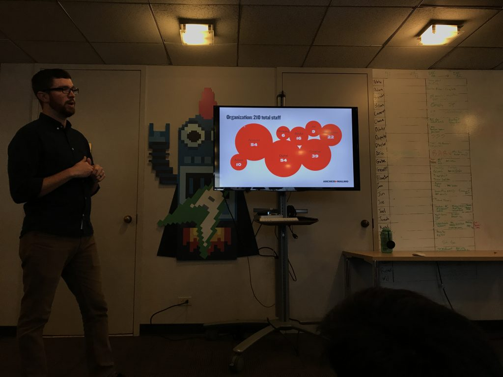

This is the account of my horrible just kidding day at Archer Malmo.
Before the trip even happened, I was already super excited. Waking up Friday was awesome. When I got to school, I didn't even want to do anything because I knew I was going on the field trip. I forgot to turn in my bellwork spiral the day before, so I took it to Mrs. Sinclair. I then went back to her about 20 minutes later to ask where we were going to meet up. She told me that we would take our backpacks to her room, and we would meet up in the main lobby.
Once we got on the bus, Mrs. Sinclair sat up front where we told her it was more dangerous because if were to wreck, then she would go flying through the front windshield. I was in the back of the bus, so it took a long time to get off the bus. Once we got off, we had to walk a little to get to the Cotton Exchange Building. When we got inside, we had to wait about 5 minutes for Ben to come get us. Their elevators aren't that big so we had to go up in groups.
When they started the presentation the majority of the group had to sit on the floor, including Mrs. Sinclair, and Mrs. Wetzel. Martin sat on the couch, and I doubt he even listened to anything that they guys said. I stood up for the majority of the presentation, but my stomach started to hurt, so I sat down. I learned a lot during the presentation. Take a look at the cool presentation that Ben and his co-workers put together below.
Once the presentation was over, we took a group photo, and as you can see below, Mrs. Sinclair was attempting to do the stanky legg. She even matched with Mrs. Wetzel's daughter Audrey they didn't plan it as I was told, but I think they totally planned it :).

After we left, we went to The Cookout. When we walked in, their line went from like 5 people to about 50 people. So, as you could imagine, they were stressed. When it was time for me to order, I joked with the girl and said "I want everything on the menu, just kidding." That made her laugh, which was my goal. I asked for a burger with a chocolate shake. The guy that was handing out drinks sat a coke down in front of me, so I asked the girl if it was my shake, and she said "No, I don't know why he made that for you, but take it anyways." So, I am glad that I walked away from the field trip with a free drink in which I also got a free refill.